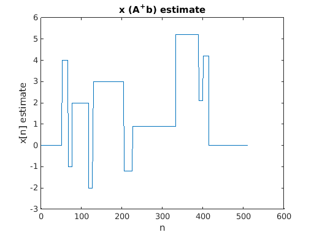
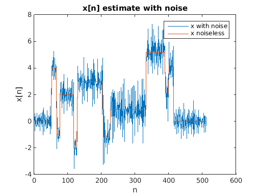
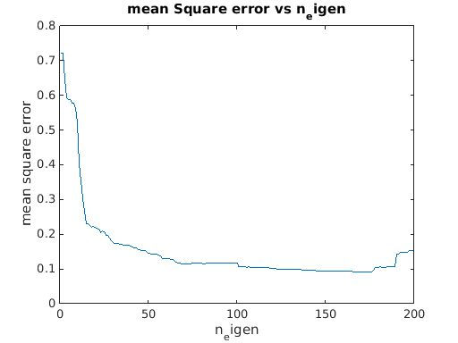
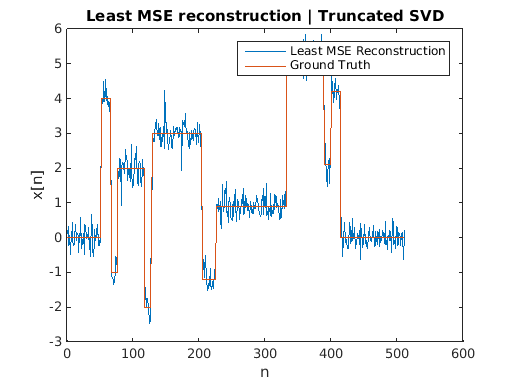
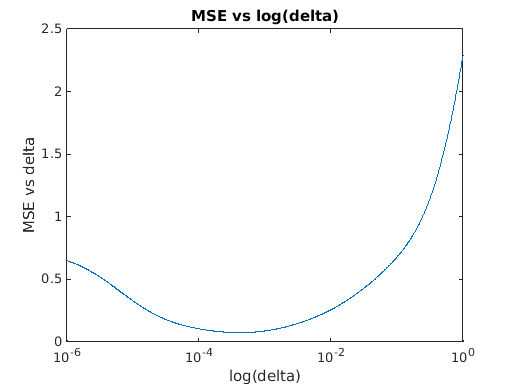
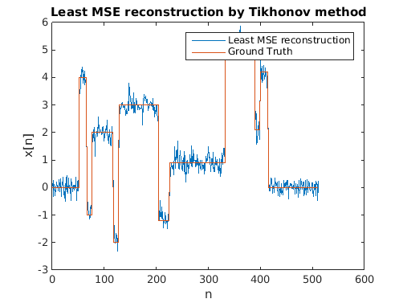

EE 779 : Assignment 4 | Q-4
Meet Pragnesh Shah, 13D070003
Contents
clear all; close all; load('data/blocks_deconv.mat');
a) Convolution matrix A
N = length(x); L = length(h); M = length(y); M = N + L -1; A = zeros(M,N); for i = 1:M for j = max(1,i-length(h)+1):min(i,N) A(i,j) = h(i-j+1); end end
b) SVD matrix of A
[U,S,V] = svd(A); largest_singular_value = S(1,1) smallest_singlar_value = S(rank(A),rank(A)) p = rank(A); U_new = U(:,1:p); S_new = S(1:p,1:p); V_new = V(1:p,1:p); A_dagger = V_new*(inv(S_new))*U_new'; x_est = A_dagger*y; fig = figure; plot(x_est); ylabel('x[n] estimate') title('x (A^+b) estimate'); xlabel('n')
largest_singular_value =
0.9987
smallest_singlar_value =
0.0029
 As we use all eigenvectors for reconstruction without corruption (of y), it is nothing but transformation into eigenspace and returning back to vectospace, thus the estimate is same as the original signal.
c) Apply pseudo-inverse to output y with noise
x_est_noisy = A_dagger*yn; fig = figure; plot([x_est_noisy,x]); x_svd_all = x_est_noisy; ylabel('x[n]') title('x[n] estimate with noise'); xlabel('n') legend('x with noise','x noiseless'); mse_x = mean((abs(x-x_est_noisy)).^2); mse_y = mean((abs(y-yn)).^2); mse_x_svd_all = mse_x; mse_x mse_y
mse_x =
0.7369
mse_y =
1.0680e-04
 Due to corruption with noise, the reconstruction doesn't take place efficiently. We see that we have a large mse in x and y (mse_x > mse_y)
d) Truncated SVD
We use a limited set of singular values for reconstruction, thus attempting to reconstruct the signal from the signal space and ignore the noise space.
eigenvector_list = (1:200); mse_x_list = zeros(size(eigenvector_list)); mse_x_min = Inf; for j = 1:length(eigenvector_list) A_trunc = zeros(M,N); A_dagger_trunc = zeros(N,M); p = rank(A); q = eigenvector_list(j); for k = 1:p-q A_trunc = A_trunc + S(k,k)*U(:,k)*V(:,k)'; end for k = 1:p-q A_dagger_trunc = A_dagger_trunc + (1/S(k,k))*V(:,k)*U(:,k)'; end x_est_noisy = A_dagger_trunc*yn; mse_x = mean((abs(x-x_est_noisy)).^2); mse_x_list(j) = mse_x; if(mse_x < mse_x_min) mse_x_min = mse_x; x_svd_best = x_est_noisy; best_eigen = q; mse_x_svd_best = mse_x; end end best_eigen fig = figure; plot(eigenvector_list,mse_x_list); ylabel('mean square error') title('mean Square error vs n_eigen'); xlabel('n_eigen') fig = figure; plot([x_svd_best,x]); ylabel('x[n]') title('Least MSE reconstruction | Truncated SVD'); xlabel('n'); legend('Least MSE Reconstruction','Ground Truth')
best_eigen = 170 
e) Tikhonov regularization
% Here we use the log space to obtain the optimum as linear space is ineeficient. I = eye(size(A'*A)); delta_list = logspace(-6,0,1000); mse_x_list = zeros(size(delta_list)); mse_x_min = Inf; for j = 1:length(delta_list) delta = delta_list(j); x_tikhonov_est = (inv(A'*A+delta*I))*A'*yn; mse_x = mean((abs(x-x_tikhonov_est)).^2); mse_x_list(j) = mse_x; if(mse_x < mse_x_min) mse_x_min = mse_x; x_tikhonov_best = x_tikhonov_est; delta_best = delta; mse_x_tikhonov_best = mse_x; end end delta_best fig = figure; semilogx(delta_list,mse_x_list); ylabel('MSE vs delta') title('MSE vs log(delta)'); xlabel('log(delta)') fig = figure; plot([x_tikhonov_best,x]); ylabel('x[n]') title('Least MSE reconstruction by Tikhonov method'); xlabel('n'); legend('Least MSE reconstruction','Ground Truth') fig = figure; plot([x_svd_all,x_svd_best,x_tikhonov_best,x]); ylabel('x[n]'); title('Method Comparison'); xlabel('n'); legend('non-Truncated SVD','Truncated SVD Best','Tikhonov Best','Ground Truth'); mse_x_svd_all mse_x_svd_best mse_x_tikhonov_best
delta_best =
4.1555e-04
mse_x_svd_all =
0.7369
mse_x_svd_best =
0.0922
mse_x_tikhonov_best =
0.0746
  
f) Comparison and Analysis
Choosing optimum value of eigenspace to reconstruct significantly improves SVD reconstruction method.
Tikhonov'smethod outperforms the truncated SVD if the optimal delta is obtained.